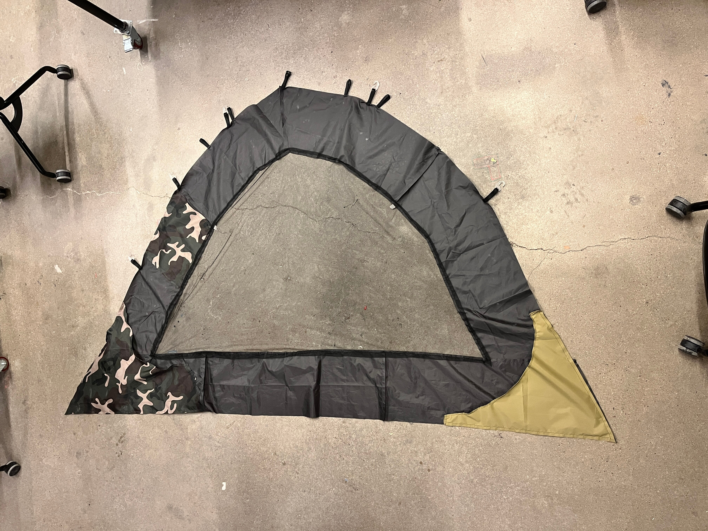
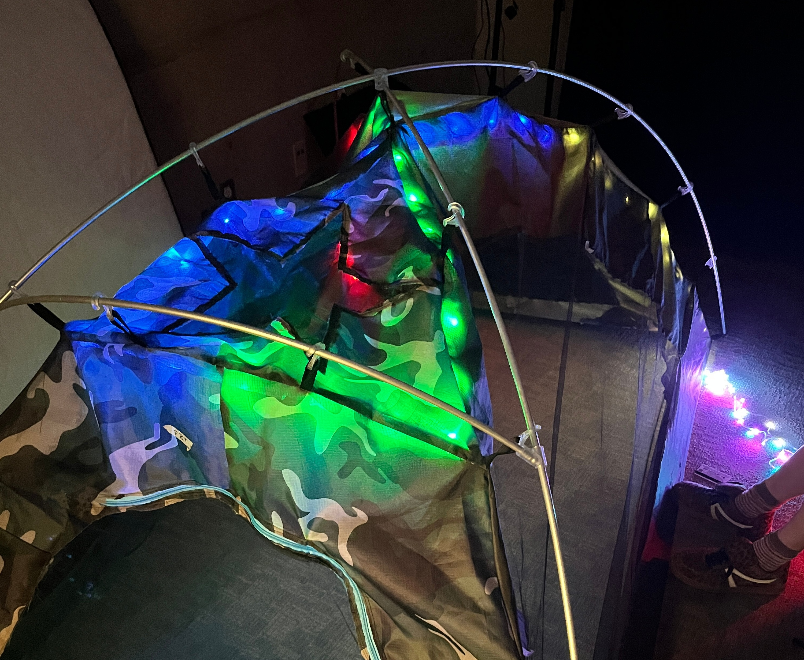

Iteration 2
Building upon the foundation of our first iteration, we focused on refining the design and addressing the initial challenges we encountered. This phase marked significant improvements in both functionality and user experience.
Goals and Objectives
In this phase, we aimed to:
- Improve structural stability and wind resistance
- Enhance the assembly mechanism for better user experience
- Refine material selection based on initial testing results
- Implement feedback from first prototype testing

Design Improvements
Based on feedback from our first prototype, we made significant improvements to the tent's structure. We enhanced the pole system for better stability and redesigned the connection points to improve durability and ease of assembly.

Material Optimization
We conducted extensive material testing to find the optimal balance between weight, durability, and weather resistance. This led to the selection of improved fabrics and structural components that better met our performance requirements.
Challenges Faced
Key challenges in this iteration included:
- Balancing weight reduction with structural integrity
- Improving weather resistance without compromising breathability
- Streamlining the assembly process while maintaining stability
- Addressing cost constraints while improving quality
Key Learnings
This iteration provided valuable insights that guided our future development:
- Importance of modular design for maintenance and repair
- Need for standardized connection systems
- Value of user testing in identifying practical issues
- Significance of material selection in overall performance